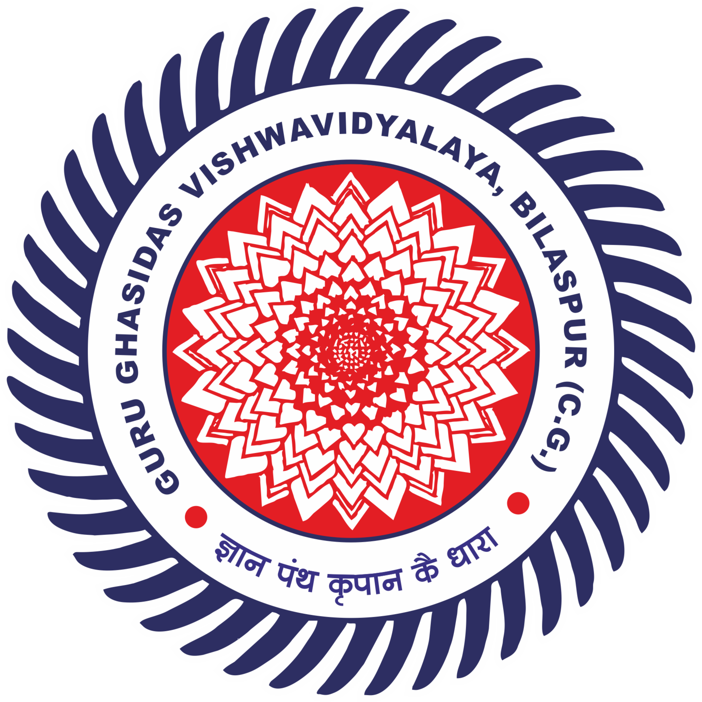

Launching
GGV SHARAVAN LINE - GSL
on the occassion of
Dr. Bhim Rao Ambedkar Jayanti
Your browser does not support the video tag.
Let's Join Hands and develop a social support Network
Together we can make a difference and create a better tomorrow
Your browser does not support the audio element.